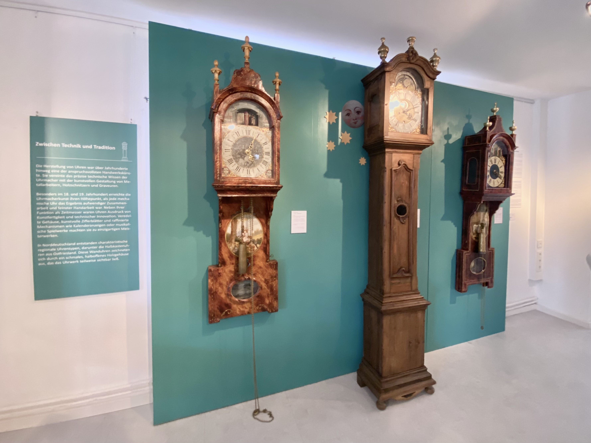

ZEITLOS
Die Sonderausstellung „ZEITLOS" im Museum „Leben am Meer“ in Esens zeigt die ganze Vielfalt der (ost-)friesischen Uhren des 18. und 19. Jahrhunderts. Dabei wird die Geschichte der Zeitmessung, die Traditionen des Uhrmacherhandwerks sowie das Leben und Wirken der Uhrmacher in den Mittelpunkt gestellt.
März 2025
Ein besonderer Fokus bei der Ausstellung liegt auf den charakteristischen friesischen Halbkastenuhren. Aufwendig gestaltet, stand der Besitz einer solchen Uhr nicht nur für Stilbewusstsein, sondern auch für sozialen Aufstieg und gesellschaftliche Anerkennung. Zu sehen sind aber auch eine Sammlungen besonderer Wecker und Küchenuhren aus verschiedenen Zeitaltern sowie alte Taschenuhren aus der internen Uhrmacherwerkstatt, die original im Museum rekonstruiert wurde.
Am 23.03.2025 wurde die Ausstellung mit rund 100 Gästen feierlich eröffnet und kann bis zum 31.10.2025 im Museum "Leben am Meer" in Esens besichtigt werden.
Von Grafikarbeiten bis hin zu Ausstellungsbau und Kuration wurde die Ausstellung von mir und einem tollen Team im Museum in einem Zeitraum von etwa 3 Monaten konzipiert und umgesetzt.